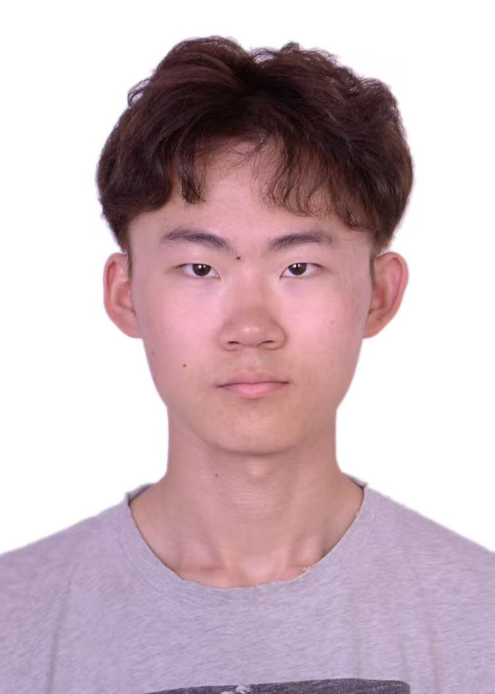

Mobile App Redesign – Fintech Onboarding
GBDA Project · UX/UI · Figma
Redesigned onboarding flow to reduce friction and improve clarity. Conducted research, testing, and delivered high-fidelity prototypes.
I’m Billy, a UX/UI designer and Global Business and Digital Arts student at the University of Waterloo. I combine visual storytelling and user-centered design to build digital experiences that are both clear and intentional.
View selected projects
I’m a UX/UI designer and second-year GBDA student at the University of Waterloo. My work blends interaction design, visual communication, and problem-solving—where aesthetics and usability meet intentionally.
I’ve gained experience through academic UX projects, freelance branding, and studio photography. My work focuses on creating polished, intuitive, and thoughtful digital experiences.
I’m a native Mandarin speaker and fluent in English, which helps me collaborate across cultural and linguistic contexts. I value clarity, details, and delivering work that feels well-crafted from start to finish.
| Skill Category | Description | Tools / Expertise |
|---|---|---|
| UX/UI Design | User-centered design, wireframes, mockups, usability testing | Figma, Sketch, Adobe XD |
| Visual & Brand Design | Brand identity, layout, typography | Photoshop, Illustrator |
| Photography | Portrait, product, studio lighting | Lightroom, Photoshop |
| Technical | Basic web development, working with developers | HTML, CSS |
| Soft Skills | Collaboration, communication, problem-solving | Mandarin, English |
A snapshot of academic, freelance, and collaborative work across UX/UI, product design, and visual communication.
Redesigned onboarding flow to reduce friction and improve clarity. Conducted research, testing, and delivered high-fidelity prototypes.
Designed product browsing and checkout experience. Created wireframes, mockups, and prototypes with user feedback iterations.
Created branding materials, social graphics, and layouts for small businesses. Ensured cohesive visual direction.
Designed posters, event graphics, and digital visuals while collaborating with student teams.
Photography sharpens my sense of composition, lighting, and storytelling, shaping the way I approach digital design.


Interested in collaborating? Feel free to reach out.